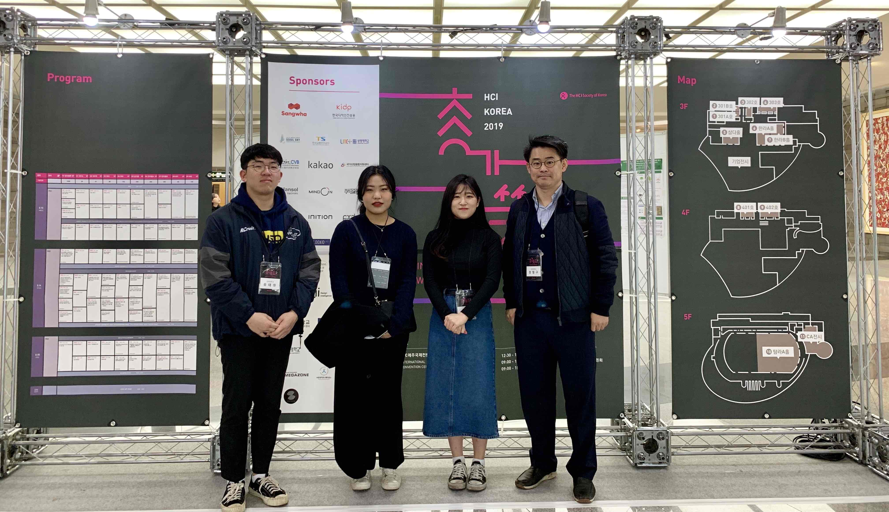

People
|  |
Faculty
| Hyunggu Jung Assistant Professor hjung [at] uos.ac.kr |
Members
| Jihyun Lee Undergraduate Research Intern Kyung Hee University 2018102130 [at] khu.ac.kr |
Subin Park Undergraduate Research Intern Kyung Hee University lmhapy25 [at] khu.ac.kr |
|||
| Minji Kwon Undergraduate Research Intern Kyung Hee University minmin0916 [at] khu.ac.kr |
Suin Gwak B.S./M.S. Student University of Seoul ei6540 [at] uos.ac.kr |
|||
 |
Joon Ho Gwon Undergraduate Research Intern University of Seoul unkn0wnpgr [at] uos.ac.kr |
|
Wanhae Lee B.S./M.S. Student University of Seoul train96 [at] uos.ac.kr |
|
| MinKi Chun M.S. Student University of Seoul cna81136 [at] uos.ac.kr |
Collaborators
| Taewon Yoo Undergraduate Research Intern Kyung Hee University xodnjs0208 [at] khu.ac.kr |
Heejae Jung Undergraduate Research Intern Kyung Hee University lydiahjchung [at] khu.ac.kr |
Alumni
| Yewon Hyun | Undergraduate Research Intern | POSTECH | Fall 2019 - Winter 2019 |
| Minyeong Seo | Undergraduate Research Intern | Kyung Hee University | Spring 2019 - Summer 2019 |
| Yiji Bae | Undergraduate Research Intern | Kyung Hee University | all 2018 - Spring 2019 |
| Hyeonjin Jeon | Undergraduate Research Intern | Kyung Hee University | Fall 2018 - Winter 2018 |
Publications by Collaborating with Undergraduate Research Interns
Park S, Kim G, Jung H. (2020).
Challenges and Opportunities for Accessible Seoul Metropolitan Buses: An Interview Study of People with Visual Impairments.
To appear at the Asian CHI Symposium 2020 at CHI'20. ACM, Honolulu, HI, USA, April 2020.Lee W, Kwon M, Hyun Y, Lee J, Gwon J, Jung H. (2020).
Uncovering CHI Reviewers Needs and Barriers.
To appear at the Asian CHI Symposium 2020 at CHI'20. ACM, Honolulu, HI, USA, April 2020.Lee J, Kim J, Jung H. (2020).
Challenges and Design Opportunities for Easy, Economical, and Accessible Offline Shoppers with Visual Impairments.
To appear at the Asian CHI Symposium 2020 at CHI'20. ACM, Honolulu, HI, USA, April 2020.Kwon M, Lee J, Lee W, Jung H. (2020).
BYE-TAL: Designing a Smartphone App for Sustainable Self-Healthcare through Design Thinking Process.
To appear at the Asian CHI Symposium 2020 at CHI'20. ACM, Honolulu, HI, USA, April 2020.Gwon J, Kwon M, Jung H. (2020).
Analyzing Bias of Comments on Political News Articles to Facilitate Transparent Online Communities.
To appear at the Asian CHI Symposium 2020 at CHI'20. ACM, Honolulu, HI, USA, April 2020.Seo M, Lee H, Choi S, Jo S, Jung H, Park S, Jung H. (2019).
Exploring Experiences of Virtual Reality among Young and Older Adults in a Subway Fire Scenario: a Pilot Study.
In proceedings of the 25th ACM Symposium on Virtual Reality Software and Technology (VRST'19), Sydney, Australia, November 2019.
(BKCSA136: BK21 Conference IF=1)Yoo T, Jung H. (2019).
Category Classification of Educational Videos on YouTube through Machine Learning Approaches using Video Titles.
In proceedings of the 2019 US-Korea Conference on Science, Technology and Entrepreneurship (UKC), Chicago, IL, USA, August 2019. [poster]Bae Y, Jung H. (2019).
A Prototype of Non-smoking Aid Application Based on Features and User Interfaces to Support People with Low Vision.
In proceedings of the 2019 US-Korea Conference on Science, Technology and Entrepreneurship (UKC), Chicago, IL, USA, August 2019. [poster]Seo M, Jung H. (2019).
A Study on the Utilization and Module Configuration Diagram of the User Path in Virtual Reality Using Unity.
In proceedings of the 2019 US-Korea Conference on Science, Technology and Entrepreneurship (UKC), Chicago, IL, USA, August 2019. [poster]Jung H, Jung H, Jung J, Jang S, Jeong S, Jung H. (2019).
Sympathy: Development and Evaluation of a Mobile Application and a Doll to Support Cognitive Behavioral Therapy for Depression
In proceedings of the Korean Society of Medical Informatics 2019, Seoul, Korea, July 2019.Lee J, Park G, Jung H. (2019).
Development and Usability Study of an Offline Shopping Assist App through Design Thinking Process
In proceedings of Korea Computer Congress 2019, Jeju, Korea, June 2019.Yoo T, Jung H. (2019).
Category Classification of Educational Videos on YouTube through Machine Learning Approaches
In proceedings of Korea Computer Congress 2019, Jeju, Korea, June 2019.Lee J, Park G, Jung H. (2019).
SEEjang: Smart, Easy, and Economical Offline Shopping Assist App Development through a Design Thinking Process.
In Proceedings of the 17th Annual International Conference on Mobile Systems, Applications, and Services (MobiSys'19). ACM, Seoul, Korea, June 2019. [video]
(BKCSA043: BK21 Conference IF=3)Jung H, Jung H. (2019).
Evaluation of Mobile Applications for Disaster Responses through Personas and Scenarios.
In Proceedings of the Asian CHI Symposium: Emerging HCI Research Collection at CHI'19. ACM, Glasgow, UK, May 2019.Jeon H, Jung H. (2019).
Designing a Crime Rate-based Recommended Routes Guidance Application
In Proceedings of HCI Korea 2019, Jeju, Korea, February 2019.Yoo T, Jung H. (2019).
Needs Analysis Based on Vlogging Career
In Proceedings of HCI Korea 2019, Jeju, Korea, February 2019.Bae Y, Jung H. (2019).
A Study on the Analysis of Personas and Scenarios for Earthquake Avoidance in School
In Proceedings of HCI Korea 2019, Jeju, Korea, February 2019.